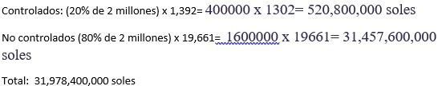

¿Qué es la diabetes?
Según el Ministerio de Salud, la diabetes mellitus (DM) es un trastorno metabólico que tiene causas diversas; se caracteriza por hiperglucemia crónica y trastornos del metabolismo de los carbohidratos, las grasas y las proteínas como consecuencia de anomalías de la secreción o del efecto de la insulina
Tipos de Diabetes
Datos:
Se buscaron datos relacionados con la diabetes mellitus tipo 2
Obesidad en el Perú
- La encuesta ENDES 2013 reailzada en cerca de 7 000 hogares a nivel nacional en mayores de 18 años, ha encontrado una prevalencia de sobrepeso de 33,8% y obesidad de 18,3%.
- Lo más alarmante de todos éstos datos es el afecto hacia la población infantil; la Encuesta Nacional de Hogares (ENAHO 2009-2010) en niños de 5 a 9 años, ha encontrado una prevalencia de 15,5% de sobrepeso y 8,9% de obesidad.
- Hasta el 2016, el Perú era el país con menor cantidad de obesos en Latinoamérica, a pesar de haber presentado un aumento de 16% en varones y 25% en mujeres desde 1985. Los nocivos cambios de estilos de vida y el fenómeno de “obesogenización” de nuestra población, en concordancia con una base genética, están dando lugar a alteraciones de la homeostasis de la glucosa, como la resistencia a la insulina, que conducen al desarrollo de hiperglicemia, que es el indicador principal de los estados diabéticos y pre-diabéticos. Esta interacción explica las crecientes tasas de prevalencia de diabetes mellitus tipo 2 en todos los grupos etarios en los últimos 10 años. (Seclén, S. 2015)
Diabetes en el Perú
Impacto Poblacional
- La INEI realizó un reporte en 2017 en el que se describe la situación de la diabetes en el Perú y si bien se encontró que las mujeres tenían en promedio mayor prevalencia a la diabetes mellitus, otras características que también presentaron un aumento considerable frente a otros criterios fueron el pertenecer a una zona urbana, en específico a Lima Metropolitana y haber terminado exclusivamente estudios primarios. Además, se encontró una relación directamente proporcional entre el alza en casos de diabetes con el quintil económico y edad.
- Estudios internacionales han sugerido que Perú es el país con menor prevalencia de diabetes en Sudamérica en población femenina: 8,1%, en comparación a 8,5% en Ecuador, 10,8% en Chile, 8,9% en Bolivia y 8,7% en Brasil. Además, según la OMS, las mujeres son las más afectadas con diabetes en la mayoría de países de Latinoamérica con excepción de Venezuela, en el que los porcentajes de varones y mujeres son de 9.1% y 8.5%, respectivamente.
- En los países en desarrollo, conjunto que incluye al Perú, la mayoría de las personas con diabetes se ubican en el rango de los 45 a 64 años de edad. En los países desarrollados, en cambio, la mayor parte de los casos de diabetes se hallan por encima de los 64 años.
- En un estudio realizado por el MINSA en Lima Metropolitana y el Callao en el 2014 se determinó que el grupo etario de 45 a 59 años estaba segundo en porcentaje de diabetes con 8.3% (60-94 años: 10.6%). También se evaluó el efecto del nivel de educación de los participantes, concluyendo con la población con solo estudios primarios superando a quienes poseían estudios secundarios y superiores por un margen de casi 6%. Finalmente, se analizaron los quintiles económicos 1, 2, 3, 4 y 5, determinando al tercero como el más probable a contraer diabetes.
Impacto Economico
- El costo del tratamiento para la diabetes con insulina varía entre 125 a 250 soles mensuales, lo que puede llegar a representar un 20% del sueldo promedio de nuestro público objetivo.
- Además, según la Sociedad Internacional de Farmacoeconomía e Investigación de Resultados (ISPOR) los costos para el Estado de un tratamiento para la diabetes son de s/1392, aproximadamente, en casos controlados y en casos no controlados la cifra aumenta a s/19,661.
- Los gastos principales en estos últimos son: dosis de insulina, para controlar el nivel de azúcar en sangre, y de un precio de S/. 60 aproximadamente; cirugías bariátricas, realizadas en personas con índice de masa corporal mayor a 35% y con un precio promedio S/. 25 000; medicamentos tales como las sulfonilureas, tiazolidinedionas y meglitinidas, que incitan la producción de insulina y cuyo valor se encuentra dentro de un rango de $100-$300 por provisión mensual y finalmente procedimientos de amputación que pueden llegar a costar de $20 000-$30 000.
Intervenciones contra la Diabetes
Los métodos de intervención que se buscan realizar en el nivel de prevención primario para la diabetes pueden dividirse en dos categorías:
- Para los alimentos y el régimen alimentario:
- Intervenciones relacionadas con la oferta
- Promover las politicas agrarias
- Eliminación de las grasas "trans"
- Promover la agricultura urbana
- Mejorar los programas escolares de alimentación
- Incorporar el concepto de la salud en el comercio internacional de alimentos
- Crear incentivos para el desarrollo de productos más saludables
- Intervenciones relacionadas con la demanda
- Promover la información exacta,objetiva y la educación
- Elaborar o actualizar las normas nacionales concernientes a los alimentos y la alimentación
- Mejorara la rotulación de los productos
- Mejorar el precio relativo de los alimentos
- Elaborar directrices y reglamentos para la comercialización y la publicidad de los alimentos para los niños y adolescentes
- Para la actividad física:
- Intervenciones del tipo ambiental:Métodos Institucionales
- Promoción de los esfuerzos para fomentar la actividad física en el lugar de trabajo
- Programas educación física en las escuelas
- Intervenciones del tipo ambiental:Métodos Urbanos
- Transporte y planificación urbana
- Recreación y deporte
Publico Objetivo
Promedio de gasto según los quintiles economicos.
- n:# de personas
- Valores entre parentesis =%
- BMI:Índice de masa corporal,peso/altura al cuadrado
Costos de la enfermedad:
- Datos Generales:
Población 2019 por sexo (miles) Hombres Mujeres Total 16,269 50.10% 16,226 49.90% 32,496 Edad Sin Diabetes (n=613) Con Diabetes (n=49) Mujeres con Diabetes (%) 25-44 239 12 5.0 45-64 274 23 8.4 65+ 100 14 14.0 - Gastos en Insulina:
Gasto de Insulina en Mujeres de 25-39 años con diabetes mellitus tipo 2 en Perú Tipo de Insulina Nombre comercial Volumen (ml) Unidades /ml Unidades / dia Costo Costo/Unidad Numero de
unidades /añoNumero de
usuariosTotal
De acción rápidaHumalog 10 100 8.55 S/. 141.60 S/. 0.14 3120.75 191,196.84 S/. 84,489,539.44 Novorapid 3 100 8.55 S/. 54.10 S/. 0.18 3120.75 S/. 107,600,849.43 Apidra 3 100 8.55 S/. 50.15 S/. 0.17 3120.75 S/. 99,744,595.17 Regular Humilina 10 100 8.55 S/. 75.00 S/. 0.08 3120.75 S/. 44,750,595.17 De acción Intermedia NPH (Neutral
Protamine Hagedorn)
10100 11.4 S/. 55.00 S/. 0.06 4161.00 S/. 43,756,352.82 De acción lenta Levemir 3 100 8.55 S/. 73.90 S/. 0.25 3120.75 S/. 146,981,566.97 Total 19764.75 S/. 527,323,719.21 Gasto de Insulina en Mujeres de 40-55 años con diabetes mellitus tipo 2 en Perú Tipo de Insulina Nombre comercial Volumen (ml) Unidades /ml Unidades / dia Costo Costo/Unidad Numero de
unidades /añoNumero de
usuariosTotal
De acción rápidaHumalog 10 100 8.55 S/. 141.60 S/. 0.14 3120.75 250,925.94 S/. 84,489,539.44 Novorapid 3 100 8.55 S/. 54.10 S/. 0.18 3120.75 S/. 107,600,849.43 Apidra 3 100 8.55 S/. 50.15 S/. 0.17 3120.75 S/. 99,744,595.17 Regular Humilina 10 100 8.55 S/. 75.00 S/. 0.08 3120.75 S/. 44,750,595.17 De acción Intermedia NPH (Neutral
Protamine Hagedorn)
10100 11.4 S/. 55.00 S/. 0.06 4161.00 S/. 43,756,352.82 De acción lenta Levemir 3 100 8.55 S/. 73.90 S/. 0.25 3120.75 S/. 146,981,566.97 Total 19764.75 , S/. 692,057,469.12 Gasto de Insulina en Mujeres de 56+ años con diabetes mellitus tipo 2 en Perú Tipo de Insulina Nombre comercial Volumen (ml) Unidades /ml Unidades / dia Costo Costo/Unidad Numero de
unidades /añoNumero de
usuariosTotal
De acción rápidaHumalog 10 100 8.55 S/. 141.60 S/. 0.14 3120.75 318,142.44 S/. 84,489,539.44 Novorapid 3 100 8.55 S/. 54.10 S/. 0.18 3120.75 S/. 107,600,849.43 Apidra 3 100 8.55 S/. 50.15 S/. 0.17 3120.75 S/. 99,744,595.17 Regular Humilina 10 100 8.55 S/. 75.00 S/. 0.08 3120.75 S/. 44,750,595.17 De acción Intermedia NPH (Neutral
Protamine Hagedorn)
10100 11.4 S/. 55.00 S/. 0.06 4161.00 S/. 43,756,352.82 De acción lenta Levemir 3 100 8.55 S/. 73.90 S/. 0.25 3120.75 S/. 146,981,566.97 Total 19764.75 , S/. 877,441,565.98 - Gastos en medicamentos de via oral:
Gastos en medicina oral en mujeres de 25-39 años con diabetes mellitus tipo 2 en el Perú Medicina Oral Precio Dosis N° de Usuarios Total Metformina S/. 0.15 191,200 S/. 28,680 Glimepirida S/. 1.20 S/. 229,440 Glibenclamida S/. 0.08 S/. 15,296 Total S/. 1.43 191,200 S/. 273,416 Gastos en medicina oral en mujeres de 40-55 años con diabetes mellitus tipo 2 en el Perú Medicina Oral Precio Dosis N° de Usuarios Total Metformina S/. 0.15 250,900 S/. 37,635 Glimepirida S/. 1.20 S/. 301,080 Glibenclamida S/. 0.08 S/. 20,072 Total S/. 1.43 250,900 S/. 358,787 Gastos en medicina oral en mujeres de 56+ años con diabetes mellitus tipo 2 en el Perú Medicina Oral Precio Dosis N° de Usuarios Total Metformina S/. 0.15 318,100 S/. 47,715 Glimepirida S/. 1.20 S/. 381,720 Glibenclamida S/. 0.08 S/. 25,448 Total S/. 1.43 318,100 S/. 454,883 - Gastos en examenes:
Gastos en medicina oral en mujeres de 25-39 años con diabetes mellitus tipo 2 en el Perú Examenes/pruebas Precio de examen/prueba N° de Usuarios Total Glucosa basal S/. 154.00 191,200 S/. 29,444,800 Resistencia a la
insulinaS/. 240.00 S/. 45,888,000 Tolerancia a la
glucosaS/. 138.00 S/. 26,385,600 Visita al
endocrinologoS/. 150.00 S/. 28,680,000 HbA1c(Hemoglobina
Glucosilada)S/. 68.00 S/. 13,001,600 Hemograma S/. 48.00 S/. 9,177,600 Transamilasa TGO S/. 72.00 S/. 13,766,400 Transamilasa TGP Total S/. 870.00 191,200 S/. 166,344,000 Gastos en medicina oral en mujeres de 25-39 años con diabetes mellitus tipo 2 en el Perú Examenes/pruebas Precio de examen/prueba N° de Usuarios Total Glucosa basal S/. 154.00 250,900 S/. 38,638,600 Resistencia a la
insulinaS/. 240.00 S/. 60,216,000 Tolerancia a la
glucosaS/. 138.00 S/. 34,624,200 Visita al
endocrinologoS/. 150.00 S/. 37,635,000 HbA1c(Hemoglobina
Glucosilada)S/. 68.00 S/. 17,061,200 Hemograma S/. 48.00 S/. 12,043,200 Transamilasa TGO S/. 72.00 S/. 18,064,800 Transamilasa TGP Total S/. 870.00 250,900 S/. 218,283,000 Gastos en medicina oral en mujeres de 25-39 años con diabetes mellitus tipo 2 en el Perú Examenes/pruebas Precio de examen/prueba N° de Usuarios Total Glucosa basal S/. 154.00 318,100 S/. 48,987,400 Resistencia a la
insulinaS/. 240.00 S/. 76,344,000 Tolerancia a la
glucosaS/. 138.00 S/. 43,897,800 Visita al
endocrinologoS/. 150.00 S/. 47,715,000 HbA1c(Hemoglobina
Glucosilada)S/. 68.00 S/. 21,630,800 Hemograma S/. 48.00 S/. 15,268,800 Transamilasa TGO S/. 72.00 S/. 22,903,200 Transamilasa TGP Total S/. 870.00 318,100 S/. 276,747,000 - Gastos en Hospitalización: 
Después de analizar las tablas y datos estadisticos encontrados en la parte superior se establece como publico objetivo el siguiente:
Mujeres peruanas de 25 años a más
Problema
El estilo de vida sedentario conlleva un aumento en el riesgo de diabetes mellitus tipo 2 en mujeres de 25 años a más.
- Según la OPS (Organización Panamericana de la Salud), la incorrecta prevención de la diabetes mellitus tipo 2 se basan en 2 factores principales: la falta de actividad física y una dieta alimenticia hipercalórica.
- No existe relación directa entre una condición laboral y el desarrollo de DM-2, sino a través del sedentarismo, alimentación malsana o al estrés que esta pudiera condicionar. En relación a las horas de la jornada laboral, existiría un incremento del 30% de riesgo de desarrollar diabetes en las personas de un estrato socioeconómico bajo que trabajan de 55 horas a más por semana, en comparación con los que trabajan de 35 a 40 horas por semana. Existe asociación entre la poca (menor a 150 minutos por semana de intensidad moderada) o nula actividad física con el riesgo a desarrollar DM-2.
Lienzos de Valor
Alegrias
- Control de la enfermedad.
- Disminuir el sentimiento de ser un obstáculo.
- Posibilidades de superar la enfermedad.
- Mejorar su calidad general de vida.
- Regresar a su trabajo con normalidad.
- Volver a ser productiva.
- Apoyar a su familia económica y emocionalmente.
- Dejar de generar gastos extras a su familia.
- Mantener su aspecto ante la sociedad.
Frustaciones
- Costos elevados.
- Altos tiempos de espera.
- Dificultad para llevar una dieta balanceada.
- Fácil accesibilidad de productos alto en azúcares, etc.
- Falta de tiempo.
- Se sienten como un obstáculo.
- Miedo a las consecuencias de la enfermedad. (Amputación, etc)
- Pierden oportunidad de pasar tiempo con su familia.
- Son marginadas socialmente.

Trabajos del Cliente
- Trabajo Funcional:
- Trabajos de hogar.
- Comercio informal.
- Trabajo Social:
- Buscan la aceptación de la sociedad.
- Buscan llamar la atención.
- Trabajo Emocional:
- Aumentar su seguridad en sí mismas.
- Mantenerse estables emocionalmente.